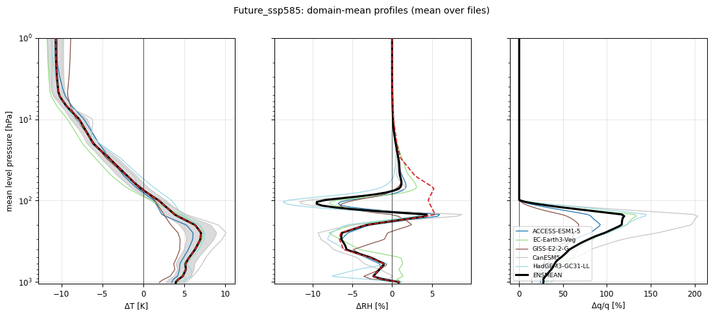
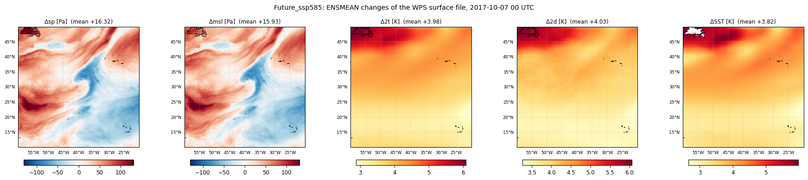
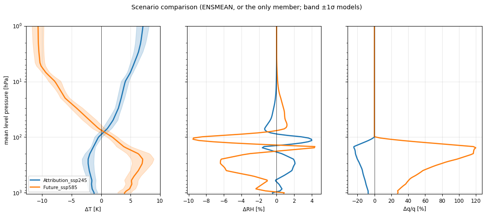
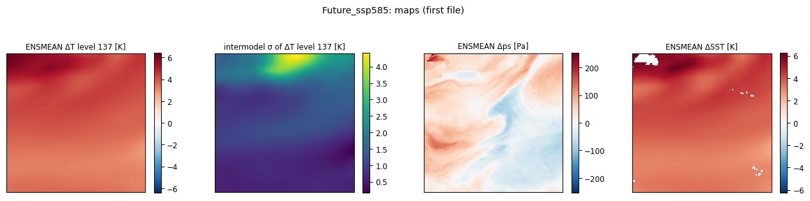
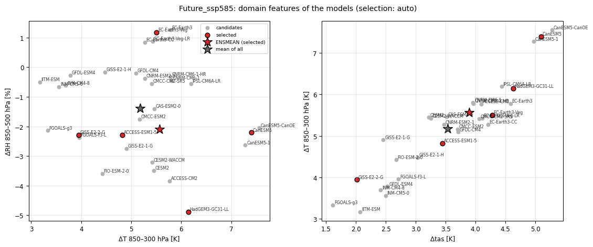
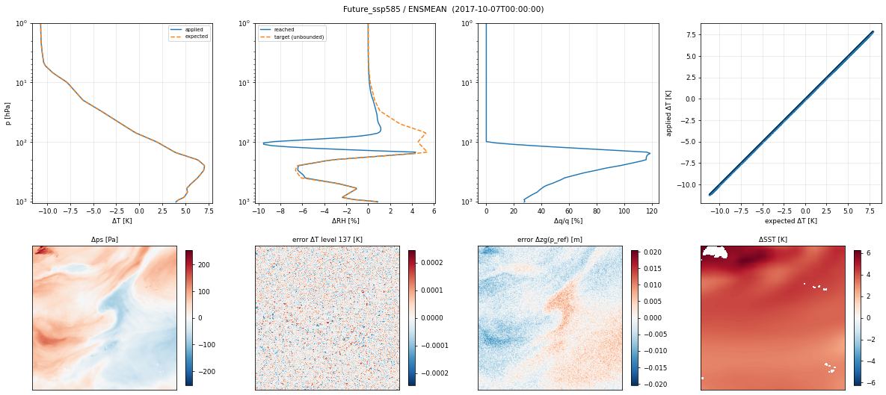

Perturbs the IFS/ERA5 model-level and surface GRIB files that WPS reads for WRF with monthly CMIP6 climate deltas. One job produces X+1 ready-to-use input sets per scenario, one per CMIP6 model plus their ensemble mean, with a surface file that stays consistent with the adjusted model levels.
A single SLURM job runs four steps. The model-level files are perturbed first, and the state of their lowest level drives the perturbation of the surface file, because WPS derives the pressure of the model levels from the surface pressure of that file.
Resolves the scenarios and the attribution year (closest available year if needed), excludes incomplete models, selects X models and interpolates each variable from its own GCM grid to the WPS input grid. Builds the ENSMEAN.
Applies ΔT and ΔRH at the original pressure of each hybrid level and adjusts surface pressure hydrostatically, in blocks of columns. Saves the state of the lowest level for each time.
Perturbs sp, msl, 2-m temperature and dewpoint, skin, sea and soil temperatures with the state of the model levels at the same time, so that calc_ecmwf_p and metgrid see a consistent atmosphere.
Checks messages, metadata and untouched fields, then recomputes the expected change of every 3D and surface field and writes a self-contained HTML report.
Identical to the HARMONIE workflow, following PGW4ERA5 (Brogli et al., 2023): deltas applied at the original pressures of the model levels, without vertical reinterpolation of the driving fields.
The change in q fades out between 150 and 100 hPa, so stratospheric water vapor is not modified.
Each column is independent, so the domain is processed in blocks of 20 000 columns. For a 401×401×137 domain the peak memory drops from about 4 to 1.9 GB per process, with identical results.

WPS computes the pressure and height of the model levels in calc_ecmwf_p from PSFC, the surface pressure of the surface file, and metgrid/real use PMSL, 2-m temperature and dewpoint. Each time of the surface file is perturbed with the state of the adjusted model levels at the same time.
| Field | Perturbation | Why |
|---|---|---|
| sp | $$sp'=sp\cdot p_s'/p_s$$ | sp and exp(lnsp) are different fields in ERA5 (up to ~650 Pa apart locally), so the relative change is applied |
| msl | $$msl'=msl\,\frac{p_s'}{p_s}\exp\!\Big[\frac{\Phi_s}{R_d}\Big(\frac{1}{\bar T'}-\frac{1}{\bar T}\Big)\Big]$$ | hydrostatic reduction with the standard lapse rate; equals sp′/sp over the sea |
| 2t | $$2t'=2t+(T_L'-T_L)$$ | ΔT of the lowest model level, tied to Δtas by the surface anchor |
| 2d | $$2d'=T_d\big(\mathrm{RH}_2'\,e_w(2t')\big),\ \ \mathrm{RH}_2'=\mathrm{RH}_2+\Delta\mathrm{hurs}$$ | 2-m relative humidity plus Δhurs, bounded as in 3D |
| skt, sst, stl1–4 | open-sea ΔSST; soil Δts damped with depth | as in the HARMONIE workflow |
| 10u, 10v | +ΔuL, ΔvL | only when the wind is perturbed |

Each model is described by three domain-mean features on its native grid: ΔT between 850 and 300 hPa, Δtas and ΔRH between 850 and 500 hPa. This demo runs the package algorithm on the real features of the 30 models available for the Ophelia domain (October; attribution deltas of 2020, the closest available year, and ssp585).
spread starts from the model closest to the multi-model mean and adds, one by one, the model farthest from those already chosen. representative takes the N models closest to the mean. ★ marks the mean of the selected models (the ENSMEAN) and ☆ the mean of all candidates.
ERA5 input for WPS on a 401×401 grid at 0.1° (10–50°N, 60–20°W), files valid at 00 and 06 UTC on 7 October 2017. The job ran on SLURM with 8 processes in 13.5 minutes. Attribution (deltas of 2020) and ssp585, five models selected automatically plus the ENSMEAN: 12 sets of WPS input files.



| Scenario | Member | ΔT 850 (K) | ΔT 500 (K) | ΔRH 850 (%) | Δps (Pa) | ΔSST (K) |
|---|
Every perturbed field is checked against its expected change, in GRIB packing units (p.u. = 2E·10−D). For sp, msl, 2t and 2d the tolerance adds the error propagated from the packed fields they depend on. All checks passed for the 12 members of the example.
| Check | Tolerance | Example (worst) |
|---|

Set the scenarios, models and file patterns at the top of run_PGW_WRF_ML.sh and submit one job.
# configuration (top of run_PGW_WRF_ML.sh) SCENARIOS="Attribution_ssp245 Future_ssp585" ATTRIB_YEAR=auto # closest available year MODELS=auto # "EC-Earth3 MIROC6 ..." | all | auto N_MODELS=5 ML_PATTERN='ECMWF_PL_*.grb' SFC_PATTERN='ECMWF_SFC*.grb' CHUNK=20000 # columns per block
sbatch run_PGW_WRF_ML.sh \
<path_input> <path_output> <cmip_root> <month|auto>
Then run WPS (ungrib, calc_ecmwf_p, metgrid) on <path_output>/<SCENARIO>/<MEMBER>/ with the same Vtables and ecmwf_coeffs, and open verification/report.html.
<path_output>/
├── _deltas/
│ ├── members.json
│ └── <SCENARIO>/<MODEL|ENSMEAN>/deltas_on_grid.nc
├── Future_ssp585/
│ ├── CanESM5/
│ │ ├── ECMWF_PL_20171007_00.grb
│ │ ├── ...
│ │ └── ECMWF_SFC_SPs.grb
│ └── ENSMEAN/ ...
├── Attribution_ssp245/ ...
└── verification/
├── report.html
└── metrics.csv